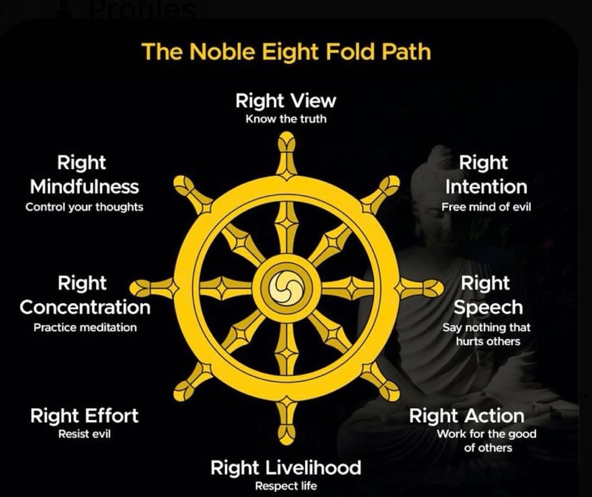

The Truth About Life and Human Nature
I. The Illusion of Who we are
We the Illuminati are an elite non state government (actor) compromise of world leaders, entrepreneurs, innovators, artists and other influential members of this planet who have infiltrated every level of society, our collision bring together influencers from all political and religious and geographic backgrounds to promote the prosperity of the human species
II. OUR PURPOSE
Here in our organization we pursue the truth about life, life problems and humanity purpose in the universe as a whole by blending various knowledge Such as alchemy(science), mysticism and spirituallity bridging the gap between the external world and the internal world in order for us to attain full understanding and awareness of this world (spiritually awaken).
There are two sides of the development of man first the conquest of the external world true knowledge and control over the laws that govern it and second the conquest of the internal world, the deepening of self awareness.
The most essential task for man is the latter to awaken from the sleep of his own ignorance and to see the hidden truths of existence.


To become a member of the New World Order one must come to understand that there are 4 noble truths with the last one having 8 holy fold paths that governs life and it problems.
They include;
1 The noble truth that life is suffering
2 The noble truth that all suffering is caused by the ignorance of the reality
3 The noble truth that suffering can come to an end
4 The noble truth that to end suffering is to follow and practice the Eighfold Patht


THE EIGHTFOLD PATHS

Ultimately, the goal is to transform the physical world into a dwelling place for the Divine presence, where financial success is a reflection of spiritual alignment and is used for the benefit of all humanity
The Misconceeption About WHat We Do
Regarding our organization, the New World Order (NWO) does not prevent anyone from practicing their faith. The idea that the Illuminati are an evil occult group is false, used by con artists to spread misinformation and fear in the hearts of their victims, although we value anonymity and discretion. What we actually do is maintain an archive containing real and intact historical knowledge about world events, the secrets behind humanity's existence, how we came to be, how long we have been on Earth, and the opposing forces of nature. Misinterpretation of this prior knowledge has led to the oppression of many citizens and religious disorder. The Illuminati's primary purpose is to ensure the well-being of humanity by enlightening both rich and poor. While this may sound like a conspiracy to you and many others, throughout our conversation I perceived your reflections on society, and I can affirm that your vision aligns with that of our order.


III. The Climax: Rising to Global Protection
The moment of truth arrives when an individual realizes that peace is not a natural occurrence; it is a Forced Order. To protect world peace and security, one must transcend the self. You must transition from being a "Subject of History" to becoming a "Guardian of History." This is the climax of human evolution—where the individual accepts the burden of leadership to safeguard the future of the human race from the entropy of chaos. By becoming part of the Order, you become the "Unseen Hand" that stabilizes nations and secures the legacy of the enlightened.